Slerp
Thumbnails and a viewer for 3D models, game files and textures.
Most file managers show a generic icon for a 3D model, a game level or a GPU texture. Slerp makes thumbnails of them, and double-clicking one opens a viewer that orbits models, walks through levels, plays animations and lists the pieces the file is made of. It reads about 200 formats, draws them with its own GPU renderer, and runs on Linux, Windows 11 and macOS. It is open source and written in Rust.
Install Source on GitHub Version 0.1, not released yet. How far along it is.
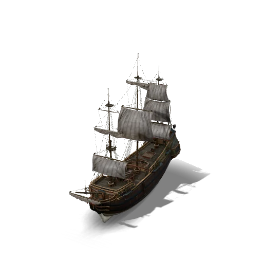
ship_pinnace.gltf LittlestTokyo.glb
LittlestTokyo.glb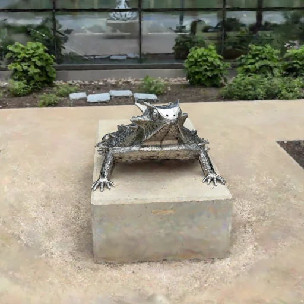
hornedlizard.spz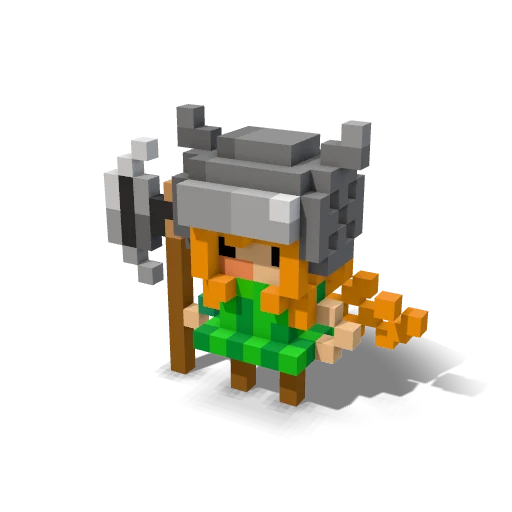
chr_knight.vox StainedGlassLamp.gltf
StainedGlassLamp.gltf Peggy.kra
Peggy.kra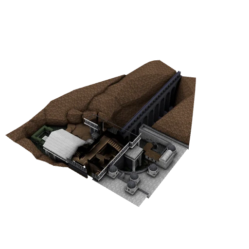
lqdm3.bsp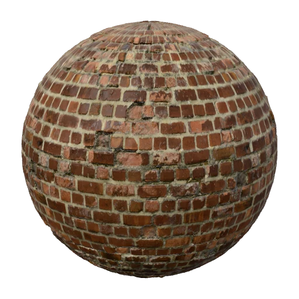
Bricks097.mtlx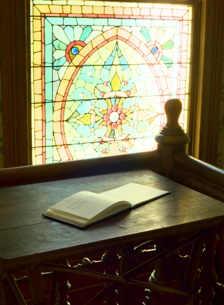
desk.ktx2 cube_diorama.blend
cube_diorama.blend sampleMap.tmx
sampleMap.tmx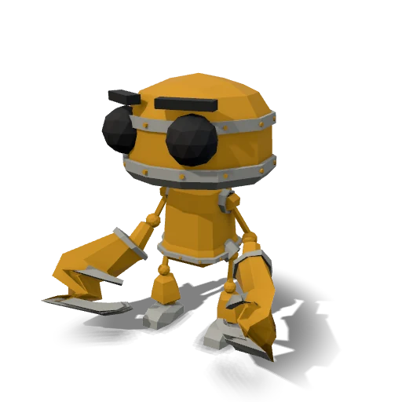
RobotExpressive.glb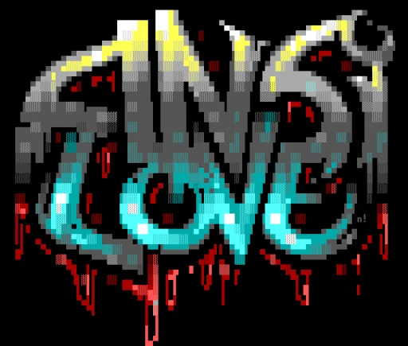
silove.ans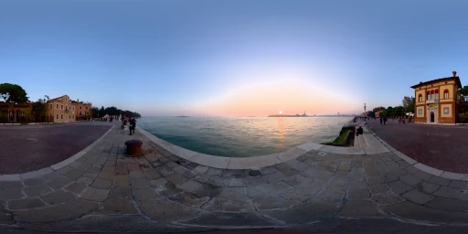
venice_sunset.hdr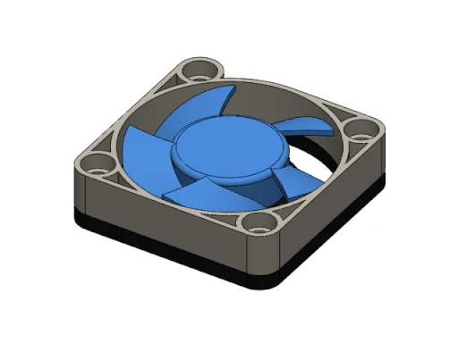
PC_Fan.SLDASM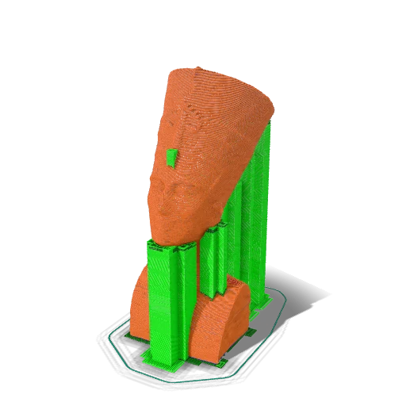
nefertiti.gcode- brain_mri.nii.gz
- twilight.cube
- about 200 formats
- 16 categories
- 3 operating systems
- 38 fuzz targets
- offline no network use
- 0.1 not released yet
What it reads
About 200 formats in 16 categories, from glTF and USD to Quake maps, KTX2 textures, Gaussian splats, DICOM scans and Commodore 64 pictures. Slerp's thumbnails are on by default for the formats desktops don't usually preview. Ordinary pictures such as PNG and JPEG open in the viewer too, but keep the desktop's own thumbnails unless you switch Slerp's on. For many formats Slerp reads only part of what the format can hold.
3D models40glTF and GLB, FBX, OBJ, USD and USDZ, STL, PLY, VRM, 3MF, MagicaVoxel, MikuMikuDance, Quake and Source models, 3ds Max, SketchUp, Maya
Point clouds and splats8Gaussian splats (.splat, SPZ, SOG), LAS and LAZ, E57, PCD, PTS
Scenes and projects3Blender, Godot and Unity scenes
Levels and maps7Quake and Half-Life BSP, Doom WADs, PK3, Hammer VMF, Roblox places
Materials3MaterialX, Godot .tres, Substance .sbsar
Textures10KTX2 with Basis Universal, DDS (BC1 to BC7), ASTC, PVR, BLP, XNB
Sprites and tile maps9Aseprite, Tiled, LDtk, Piskel, texture atlases
Images33OpenEXR, Radiance HDR, PSD, GIMP, Krita, JPEG XL, AVIF, 16-bit heightmaps
Retro computer art16Amiga IFF, Atari ST, Commodore 64, ANSI art, PICO-8 cartridges
Palettes and colour tables11.cube and .3dl lookup tables, ASE, ACO, GIMP palettes
Drawings and CAD10DXF, Rhino, SVG, Illustrator, WMF and EMF, PICT
Documents with stored previews25DWG, SolidWorks, Revit, Cinema 4D, ZBrush, Procreate, Figma, Unreal .uasset
Game archives6Quake PAK, Valve VPK, Godot PCK, .unitypackage
Toolpaths and GPS tracks7G-code, GPX, FIT, KML, GeoJSON
Medical images5DICOM, NIfTI, NRRD, MetaImage
Scientific data11FITS, HDF5, NetCDF, NumPy, whole-slide scans
The full list of formats with their extensions is in docs/formats.md, and docs/format-details.md says what each reader covers and what it leaves out.
How thumbnails work
On Linux, Slerp is a thumbnailer in the freedesktop standard, so Dolphin, GNOME Files, Nemo, Caja, Thunar and PCManFM-Qt use it with no plugin of their own. On Windows it is a thumbnail handler for Explorer, and on macOS a Quick Look extension for Finder.
- The file manager runs
slerp thumbnail 256 chair.glb out.png, one process per file. - If the file carries a picture its own program saved, as Blender, SketchUp, SolidWorks and Procreate files do, that picture is the thumbnail. The viewer always shows the file's own content.
- Pictures and textures decode right there, on the CPU.
- Models, levels and materials go to the resident helper. Starting a GPU costs 100 to 800 ms, so the first thumbnail starts a helper that keeps it loaded. On a laptop with an RTX 5070 Ti, each thumbnail after that took a few milliseconds. The helper exits after two idle minutes.
- GNOME's thumbnail sandbox hides the GPU, so there Slerp renders on lavapipe, Mesa's Vulkan driver for the CPU.
The renderer is Slerp's own, on wgpu. It shades glTF's physically based materials (glass that refracts what is behind it included) with ambient occlusion in the creases, draws point clouds as solid dots and Gaussian splats sorted on the GPU, and leaves the baked light of Quake and Doom levels untouched.


An optional Qt image plugin lets Gwenview open KTX2 and ASTC textures, and Dolphin's Information panel show models, levels and materials slowly turning. The plugin asks the helper for each picture, so no GPU driver or file parser runs inside those programs.
The viewer
Double-click a file, or run slerp view chair.glb. The viewer picks a mode from the file: an orbit camera for models, first person for levels, mips and channels for textures, a ball for materials, slices for volumes.


- Models and levels. Orbit with the mouse, or press Tab and fly with W A S D. Levels open at the player's start.
- Animation. Play a character's clips, or those of an animation library, matched by joint names or retargeted between humanoid skeletons.
- Textures. Mip levels, array layers, cube faces and channels, at the texture's own size. Basis Universal textures stay compressed on the GPU.
- The pieces inside. The Contents panel lists nodes, meshes, materials, textures, clips, layers and archive entries. Click one to see it alone; drag it out as an ordinary file.
- Saving as glTF. File, Save as GLB writes what the viewer shows in 3D. Slerp's tests check the output with the Khronos glTF Validator.
- Scans and volumes. CT and MRI scans with window and level, volumes a slice at a time.
- A picture viewer's habits. Page Up and Page Down step through the folder. When an editor saves the file, a bar offers to reload it and keeps your camera.
- The desktop's look. Colours, fonts and icons come from KDE, GNOME, Windows or macOS.
On the command line
slerp view chair.glb # the viewer
slerp thumbnail 256 chair.glb chair.png # what file managers run
slerp render lqdm1.bsp shot.png --size 1920
slerp convert knight.vox knight.glb # a 3D file to glTF
slerp info freedoom2.wad --part MAP07 # what a file holds
slerp contents extract pak0.pak --out assets/Safety
A thumbnailer reads the files you browse past, downloads included, so Slerp treats each file as possibly hostile. The measures below lower the risk of a bad file without ruling it out.
- Checked
- Readers check sizes and offsets before using them and cap how much memory a file can ask for. A damaged file should give a message rather than a crash or a hang.
- Fuzzed
- 38 cargo-fuzz targets cover the readers that take untrusted bytes, built with overflow checks on and an allocator that aborts on any allocation over 512 MB. The crashes and hangs found so far are fixed, each with a regression test.
- Isolated
- The riskier C and C++ decoders (Microsoft's jxrlib, Epic's DNA reader, the AV1 decoder, the system's libheif) and the SVG renderer run in forked child processes with time and memory limits.
- Read only
- Slerp never changes the files it reads. Extracting from an archive writes only into the folder you give it.
- Offline
- Slerp never goes online. No telemetry, no update checks, no accounts.
Performance
| Starting a GPU, paid once per helper | 100 to 800 ms |
|---|---|
| Each thumbnail after that | a few ms |
| A forest of 100,000 instanced trees (USD), on an RTX 5070 Ti | 3.4 ms a frame |
| Opening the next file in a warm viewer | a few tens of ms |
| The Qt plugin giving up on a broken file | 2.5 s at worst |
These times were measured on one laptop with an RTX 5070 Ti; other machines will differ. The viewer starts its GPU first, since the driver takes longest, and meanwhile opens its window and reads the theme and the file. It draws a model before all its textures have arrived. After its last window closes it stays loaded for 30 seconds, so the next file opens sooner. The copies of a mesh are drawn in one call, and copies off screen are skipped, which took that forest from 73.6 ms a frame to 3.4 ms, in a 1600 by 1000 window.
Install
There are no releases yet. Packages for Debian and Ubuntu, Arch Linux, Windows and macOS are coming. Until then, each one builds from the source with one script.
Debian and Ubuntu
tools/build-deb.sh
sudo apt install ./local/dist/slerp_0.1.0-1_amd64.deb \
./local/dist/slerp-qt-plugin_0.1.0-1_amd64.debThe second package is the optional Qt image plugin. Dolphin keeps its own list of preview plugins, so each user runs slerp associate --apply once and restarts Dolphin. Other file managers pick Slerp up by themselves.
Arch Linux
tools/source-tarball.sh
cp local/dist/slerp-0.1.0.tar.gz packaging/aur/
cd packaging/aur && makepkg -siWindows 11
tools/build-windows.sh builds a zip on Linux with slerp.exe, slerpw.exe and Explorer's thumbnail handler, which need no other DLLs. Unpack it into a folder that stays put, such as %LOCALAPPDATA%\Programs\Slerp, and run this there once, without administrator rights:
slerp.exe registerExplorer then shows thumbnails of Slerp's formats and offers Slerp under "Open with". slerp.exe unregister undoes both.
macOS
On a Mac with Rust and Apple's Command Line Tools (not Xcode), this builds Slerp.app with its Quick Look extension and puts it in ~/Applications:
tools/macos-app.sh installBuild from source
Slerp needs Rust 1.93 or newer, a C and C++ compiler, libclang, and the Wayland and xkbcommon headers. On Debian and Ubuntu:
sudo apt install cargo libclang-dev libwayland-dev \
libxkbcommon-dev pkg-config g++
git clone https://github.com/eric-frost/slerp
cd slerp
cargo build --releaseThe heavier picture decoders (HEIC, AVIF, JPEG XL) are Cargo features, all on by default. cargo build --release --no-default-features leaves out the viewer too and makes a thumbnailer alone, half the size. The README lists the files to install beside the binary.
Questions
Why the name?
In 3D programs, slerp (spherical linear interpolation) is how a camera or a joint turns smoothly from one rotation to another. Orbiting a model in a viewer is a lot of that.
Does it go online?
No. Slerp has no telemetry, no update checks and no accounts, and it never downloads anything. Everything it reads and writes stays on your computer.
Why not PDF?
Slerp is for graphics, not documents. It makes no PDF thumbnails unless you switch them on, and it leaves PDFs to your usual PDF app. The same goes for PNG, JPEG and other ordinary pictures: Slerp's thumbnails for them are off unless you switch them on, though the viewer still opens them.
Is it free?
Yes. Slerp is open source under the MIT licence or the Apache License 2.0, at your option. What it bundles is under permissive licences too: GPL libraries are left out, and libheif is only loaded if your system already has it.
Who makes it, and how far along is it?
One developer, Eric, who vibe coded it: AI coding agents wrote all of the code, the tests included, from his descriptions, and he never looked at the code himself. Slerp is a young project with no releases yet. For many formats it reads only part of what the format can hold (docs/format-details.md says what each reader leaves out), and most of the testing so far has been on one Linux laptop with KDE, a Windows 11 virtual machine and one Mac, so expect files it gets wrong. Bug reports are welcome on GitHub, most of all with a file Slerp gets wrong that you are free to share.